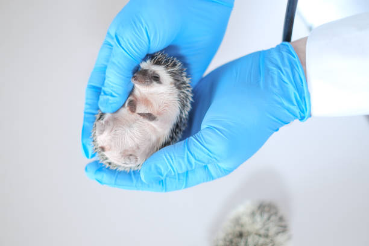

Health
Hedgehog Wellness
Hedgehogs are "prey animals," which means they are biologically programmed to hide illness or pain until it becomes severe. This makes regular health monitoring by the owner the most important part of their care.
A healthy hedgehog should have bright, clear eyes, a clean nose, and quills that are uniform without large bald patches. They should be active during their nighttime hours and maintain a consistent weight.

Common Ailments
Mites & Parasites
Commonly signaled by excessive scratching and quill loss. Mites look like small moving dots of dandruff.
Wobbly Hedgehog (WHS)
A progressive neurological disease that affects movement. Early signs include a slight "wobble" in the hind legs.
Dental Issues
Hedgehogs are prone to gum disease. Soft foods or treats can lead to tartar buildup and tooth decay.
Hibernation Warning
If a hedgehog's environment gets too cold, they may attempt to hibernate. This is extremely dangerous for pet hedgehogs. They will feel cold to the touch and be unresponsive. Warm them up slowly with body heat immediately.
Urgent Symptoms
- Lethargy or unusual weakness
- Green or slimy droppings
- Blood in urine or stool
- Wheezing or gasping for air